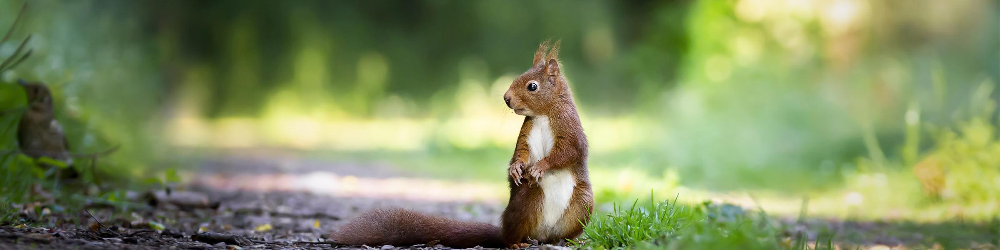
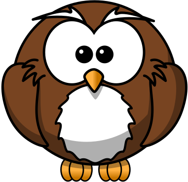

Kids
Home
Animals
Kids Page
About Us
Want to help animals?

Build a bird feeder!
Follow this simple guide
Cut a hole in the side of the bottle
Make a few small holes in the bottom
Hang it on a tree or your washing line
Remember to keep your feeders well stocked and clean